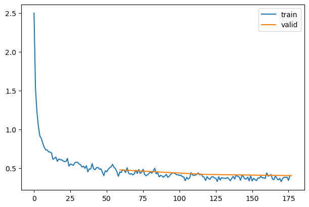
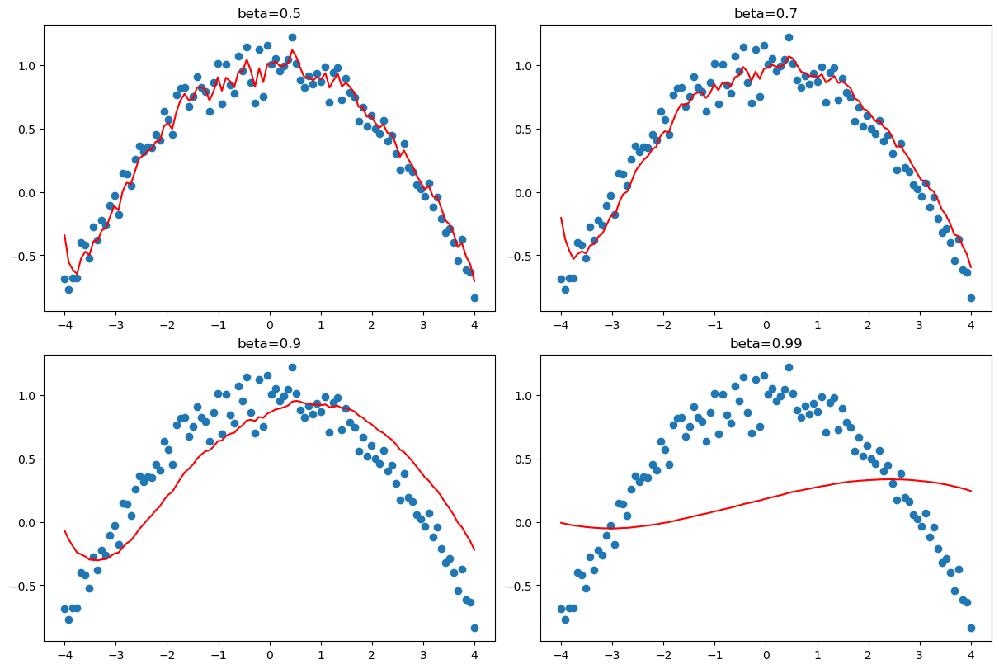
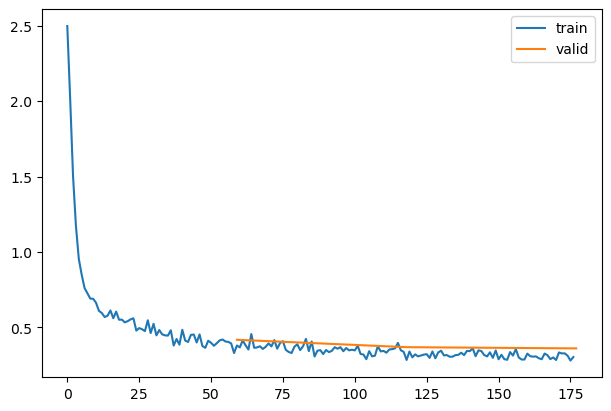
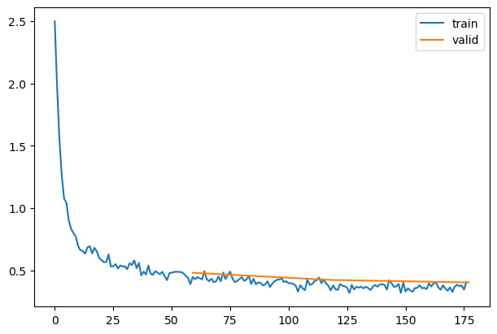
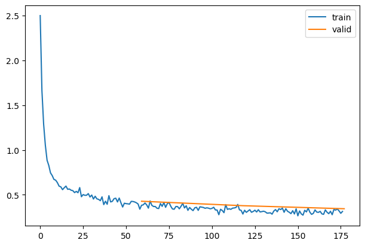
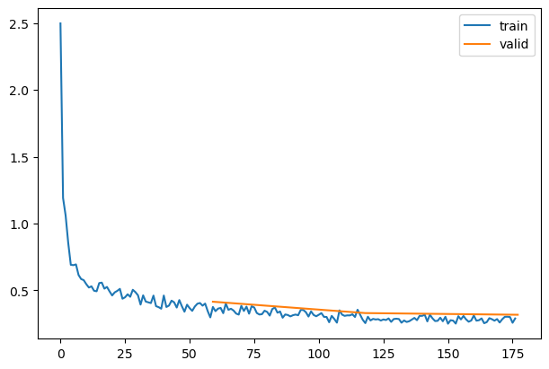
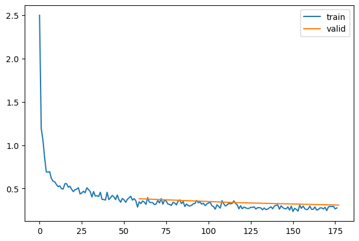
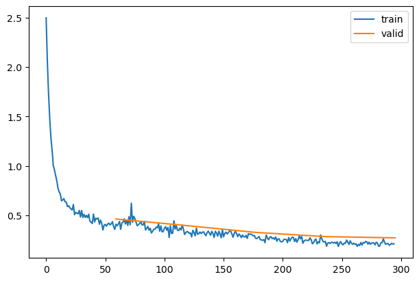

Exported source
import torch
from fastAIcourse.datasets import *
from fastAIcourse.conv import *
from fastAIcourse.learner import *
from fastAIcourse.activations import *
from fastAIcourse.init import *import pickle,gzip,math,os,time,shutil,torch,matplotlib as mpl,numpy as np,matplotlib.pyplot as plt
import fastcore.all as fc
from collections.abc import Mapping
from pathlib import Path
from operator import attrgetter,itemgetter
from functools import partial
from copy import copy
from contextlib import contextmanager
import torchvision.transforms.functional as TF,torch.nn.functional as F
from torch import tensor,nn,optim
from torch.utils.data import DataLoader,default_collate
from torch.nn import init
from torch.optim import lr_scheduler
from torcheval.metrics import MulticlassAccuracy
from datasets import load_dataset,load_dataset_builderSGD (params, lr, wd=0.0)
Initialize self. See help(type(self)) for accurate signature.
class SGD:
def __init__(self, params, lr, wd=0.):
params = list(params)
fc.store_attr()
self.i = 0
def step(self):
with torch.no_grad():
for p in self.params:
self.reg_step(p)
self.opt_step(p)
self.i +=1
def opt_step(self, p): p -= p.grad * self.lr
def reg_step(self, p):
if self.wd != 0: p *= 1 - self.lr*self.wd
def zero_grad(self):
for p in self.params: p.grad.data.zero_()| accuracy | loss | epoch | train |
|---|---|---|---|
| 0.772 | 0.640 | 0 | train |
| 0.824 | 0.477 | 0 | eval |
| 0.845 | 0.424 | 1 | train |
| 0.849 | 0.419 | 1 | eval |
| 0.865 | 0.373 | 2 | train |
| 0.851 | 0.403 | 2 | eval |

Consider the difference between weight decay and L2 regularization:
…vs…
_,axs = plt.subplots(2,2, figsize=(12,8))
betas = [0.5,0.7,0.9,0.99]
for beta,ax in zip(betas, axs.flatten()):
ax.scatter(xs,ys)
avg,res = 0,[]
for yi in ys:
avg = beta*avg + (1-beta)*yi
res.append(avg)
ax.plot(xs,np.array(res), color='red');
ax.set_title(f'beta={beta}')
Momentum (params, lr, wd=0.0, mom=0.9)
Initialize self. See help(type(self)) for accurate signature.
| accuracy | loss | epoch | train |
|---|---|---|---|
| 0.787 | 0.597 | 0 | train |
| 0.848 | 0.417 | 0 | eval |
| 0.869 | 0.360 | 1 | train |
| 0.861 | 0.368 | 1 | eval |
| 0.885 | 0.315 | 2 | train |
| 0.871 | 0.360 | 2 | eval |

RMSProp (params, lr, wd=0.0, sqr_mom=0.99, eps=1e-05)
Initialize self. See help(type(self)) for accurate signature.
class RMSProp(SGD):
def __init__(self, params, lr, wd=0., sqr_mom=0.99, eps=1e-5):
super().__init__(params, lr=lr, wd=wd)
self.sqr_mom,self.eps = sqr_mom,eps
def opt_step(self, p):
if not hasattr(p, 'sqr_avg'): p.sqr_avg = p.grad**2
p.sqr_avg = p.sqr_avg*self.sqr_mom + p.grad**2*(1-self.sqr_mom)
p -= self.lr * p.grad/(p.sqr_avg.sqrt() + self.eps)set_seed(42)
model = get_model(act_gr, norm=nn.BatchNorm2d).apply(iw)
learn = TrainLearner(model, dls, F.cross_entropy, lr=3e-3, cbs=cbs, opt_func=RMSProp)
learn.fit(3)| accuracy | loss | epoch | train |
|---|---|---|---|
| 0.766 | 0.664 | 0 | train |
| 0.821 | 0.482 | 0 | eval |
| 0.848 | 0.416 | 1 | train |
| 0.846 | 0.424 | 1 | eval |
| 0.866 | 0.367 | 2 | train |
| 0.851 | 0.404 | 2 | eval |

Adam (params, lr, wd=0.0, beta1=0.9, beta2=0.99, eps=1e-05)
Initialize self. See help(type(self)) for accurate signature.
class Adam(SGD):
def __init__(self, params, lr, wd=0., beta1=0.9, beta2=0.99, eps=1e-5):
super().__init__(params, lr=lr, wd=wd)
self.beta1,self.beta2,self.eps = beta1,beta2,eps
def opt_step(self, p):
if not hasattr(p, 'avg'): p.avg = torch.zeros_like(p.grad.data)
if not hasattr(p, 'sqr_avg'): p.sqr_avg = torch.zeros_like(p.grad.data)
p.avg = self.beta1*p.avg + (1-self.beta1)*p.grad
unbias_avg = p.avg / (1 - (self.beta1**(self.i+1)))
p.sqr_avg = self.beta2*p.sqr_avg + (1-self.beta2)*(p.grad**2)
unbias_sqr_avg = p.sqr_avg / (1 - (self.beta2**(self.i+1)))
p -= self.lr * unbias_avg / (unbias_sqr_avg + self.eps).sqrt()set_seed(42)
model = get_model(act_gr, norm=nn.BatchNorm2d).apply(iw)
learn = TrainLearner(model, dls, F.cross_entropy, lr=6e-3, cbs=cbs, opt_func=Adam)
learn.fit(3)| accuracy | loss | epoch | train |
|---|---|---|---|
| 0.791 | 0.583 | 0 | train |
| 0.839 | 0.428 | 0 | eval |
| 0.870 | 0.359 | 1 | train |
| 0.859 | 0.379 | 1 | eval |
| 0.886 | 0.312 | 2 | train |
| 0.874 | 0.345 | 2 | eval |

We’ve already seen how we can easily write a custom LR-adjusting callback or Learner, or can use the predefined PyTorch schedulers. We’ll use the predefined ones for now since there’s nothing new to learn in implementing them ourselves.
['ChainedScheduler',
'ConstantLR',
'CosineAnnealingLR',
'CosineAnnealingWarmRestarts',
'Counter',
'CyclicLR',
'EPOCH_DEPRECATION_WARNING',
'ExponentialLR',
'LRScheduler',
'LambdaLR',
'LinearLR',
'MultiStepLR',
'MultiplicativeLR',
'OneCycleLR',
'Optimizer',
'PolynomialLR',
'ReduceLROnPlateau',
'SequentialLR',
'StepLR',
'_LRScheduler',
'__all__',
'__builtins__',
'__cached__',
'__doc__',
'__file__',
'__loader__',
'__name__',
'__package__',
'__spec__',
'_enable_get_lr_call',
'bisect_right',
'inf',
'math',
'types',
'warnings',
'weakref',
'wraps']'ChainedScheduler ConstantLR CosineAnnealingLR CosineAnnealingWarmRestarts Counter CyclicLR ExponentialLR LambdaLR LinearLR MultiStepLR MultiplicativeLR OneCycleLR Optimizer PolynomialLR ReduceLROnPlateau SequentialLR StepLR''ChainedScheduler ConstantLR CosineAnnealingLR CosineAnnealingWarmRestarts Counter CyclicLR ExponentialLR LambdaLR LinearLR MultiStepLR MultiplicativeLR OneCycleLR Optimizer PolynomialLR ReduceLROnPlateau SequentialLR StepLR''add_param_group defaults load_state_dict param_groups profile_hook_step register_step_post_hook register_step_pre_hook state state_dict step zero_grad'SGD (
Parameter Group 0
dampening: 0
differentiable: False
foreach: None
lr: 0.006
maximize: False
momentum: 0
nesterov: False
weight_decay: 0
)['params',
'lr',
'momentum',
'dampening',
'weight_decay',
'nesterov',
'maximize',
'foreach',
'differentiable']sched_lrs (sched, steps)
BaseSchedCB (sched)
Initialize self. See help(type(self)) for accurate signature.
BatchSchedCB (sched)
Initialize self. See help(type(self)) for accurate signature.
HasLearnCB ()
Initialize self. See help(type(self)) for accurate signature.
RecorderCB (**d)
Initialize self. See help(type(self)) for accurate signature.
set_seed(42)
model = get_model(act_gr, norm=nn.BatchNorm2d).apply(iw)
rec = RecorderCB(lr=_lr)
xtra = [BatchSchedCB(sched),rec]
learn = TrainLearner(model, dls, F.cross_entropy, lr=2e-2, cbs=cbs+xtra, opt_func=optim.AdamW)
learn.fit(3)| accuracy | loss | epoch | train |
|---|---|---|---|
| 0.806 | 0.525 | 0 | train |
| 0.848 | 0.415 | 0 | eval |
| 0.878 | 0.331 | 1 | train |
| 0.879 | 0.330 | 1 | eval |
| 0.897 | 0.282 | 2 | train |
| 0.881 | 0.318 | 2 | eval |

EpochSchedCB (sched)
Initialize self. See help(type(self)) for accurate signature.
sched = partial(lr_scheduler.CosineAnnealingLR, T_max=3)
set_seed(42)
xtra = [EpochSchedCB(sched),rec]
model = get_model(act_gr, norm=nn.BatchNorm2d).apply(iw)
learn = TrainLearner(model, dls, F.cross_entropy, lr=2e-2, cbs=cbs+xtra, opt_func=optim.AdamW)
learn.fit(3)| accuracy | loss | epoch | train |
|---|---|---|---|
| 0.806 | 0.524 | 0 | train |
| 0.857 | 0.382 | 0 | eval |
| 0.879 | 0.328 | 1 | train |
| 0.874 | 0.336 | 1 | eval |
| 0.898 | 0.275 | 2 | train |
| 0.883 | 0.309 | 2 | eval |

Paper by Leslie Smith.
set_seed(42)
lr,epochs = 6e-2,5
model = get_model(act_gr, norm=nn.BatchNorm2d).apply(iw)
tmax = epochs * len(dls.train)
sched = partial(lr_scheduler.OneCycleLR, max_lr=lr, total_steps=tmax)
xtra = [BatchSchedCB(sched), rec]
learn = TrainLearner(model, dls, F.cross_entropy, lr=lr, cbs=cbs+xtra, opt_func=optim.AdamW)
learn.fit(epochs)| accuracy | loss | epoch | train |
|---|---|---|---|
| 0.767 | 0.660 | 0 | train |
| 0.842 | 0.462 | 0 | eval |
| 0.855 | 0.391 | 1 | train |
| 0.859 | 0.396 | 1 | eval |
| 0.884 | 0.312 | 2 | train |
| 0.881 | 0.327 | 2 | eval |
| 0.906 | 0.254 | 3 | train |
| 0.895 | 0.284 | 3 | eval |
| 0.920 | 0.215 | 4 | train |
| 0.900 | 0.271 | 4 | eval |
